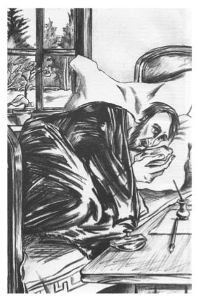

31 Mart
Durumum çok kötü. Bu satırları yatakta yazıyorum. Dünden beri havada ani bir değişiklik oldu. Bugün hava sıcak, âdeta bir yaz günü. Her şey eriyor, çözünüyor, akıp gidiyor. Hava buram buram günyüzüne çıkan toprağın ağır ve keskin kokusuyla dolu. Her yerde buharlar yükseliyor. Güneş sanki her şeyi paramparça ediyor. Çok kötüyüm, çürüdüğümü hissediyorum.
Günlüğümü yazmak istedim, başka ne yapabilirdim ki? Yaşadığım bir olayı anlattım. Gevezelik ettim, uyuyan anılar uyandı ve beni sürükleyip götürdü. Uzun uzadıya ve acele etmeden önümde yıllar varmış gibi yazdım; artık devam edecek vaktim kalmadı. Ölüm, ölüm yaklaşıyor. Ürkütücü kreşendosunu duyabiliyorum. Zaman geldi... zaman geldi!..
Aslında ne önemi var? Ne anlattığımın bir önemi var mı? Ölümün karşısında bütün fani kaygılar yok olur. Sakinleştiğimi hissediyorum; daha sade, daha berrak oluyorum. Çok geç anladım!.. Tuhaf şey! Sakinleştim – tabii bir yandan da... korkuyorum. Evet, korkuyorum. Vücudumun yarısına kadar sessiz ve dipsiz karanlığa batmış titriyorum, başımı çevirip tamahkâr bir dikkatle etrafımdaki her şeye gözlerimi dikip bakıyorum. Her şey iki kat daha değerli benim için. Duvardaki her lekeye veda ederken, zavallı ve kasvetli odama tekrar tekrar bakmaya doyamıyorum! Son kez doya doya bak gözlerim. Yaşam geri çekiliyor; yavaşça ve pürüzsüzce benden ayrılıyor, tıpkı denizcinin gözünden kıyının kaybolması gibi. Bakıcımın koyu yazmasına sarılı soluk ve yaşlı yüzü, masadaki tıslayan semaver, penceredeki

sardunya saksısı ve sen zavallı köpeğim Tresor, bu satırları yazdığım kalem, kendi elim, şimdi görüyorum sizleri... işte buradasınız... gerçekten... bugün olabilir mi... sizi bir daha göremeyecek miyim? Bir canlının hayatı terk etmesi zor! Neden bana sokuluyorsun zavallı köpek? Neden hararetle kuyruğunu dikip sallayarak patilerini yatağa koymaya geldin, neden yaslı gözlerini bana diktin? Yoksa benim için üzülüyor musun? Efendinin yakında göçeceğini şimdiden hissediyor musun? Ah, keşke bütün anılarımı odamdaki eşyalar gibi gözümün önünden geçirebilsem! Bu anıların iç karartıcı ve önemsiz olduğunu biliyorum, ama başka bir şey gelmiyor aklıma. Liza’nın dediği gibi, “Boşluk, korkunç boşluk!”
Aman Tanrım! Aman Tanrım! Ölüyorum burada... Sevme yetisi olan ve sevmeye hazır olan bir kalp yakında duracak... Ve bir kere bile mutluluğu tatmadan mı olacak bu, bir kere bile katıksız mutluluğun tatlı külfeti altında ezilmeden mi olacak? Heyhat! Bu imkânsız, imkânsız, biliyorum... En azından ölmeden önce –çünkü ölüm kutsal bir emeldir, çünkü her varlığı yüceltir– tatlı, hüzünlü, dostça bir ses arkamdan veda şarkısını, bahtsızlığımın şarkısını söylese içim rahatlardı belki. Ama unutulmuş halde, ahmakça ölmek var ya...
Sanırım sayıklamaya başladım.
Hoşçakal hayat! Hoşçakal bahçem! Ve siz, ıhlamur ağaçlarım! Yaz geldiğinde baştan aşağı çiçeklere bürünmeyi unutmayın... hoş kokulu gölgenizde, taze çimenlerde, rüzgârın kıpırdattığı yaprakların fısıltısında uzanmak hoş olsun. Hoşçakal, hoşçakal! Sonsuza dek hoşçakalın!
Hoşçakal Liza! Bu iki kelimeyi yazdım ve neredeyse kahkaha atacaktım. Kitaplardan fırlama yapmacık bir haykırış. Sanki duygusal bir hikâye yazıyorum ve umutsuz bir mektubun sonuna geldim...
Yarın nisanın biri. Yarın ölecek miyim? Doğrusu hiç yakışık almaz. Yine de benim için doğru olan bu...
Doktor bugün nasıl da çene çaldı.